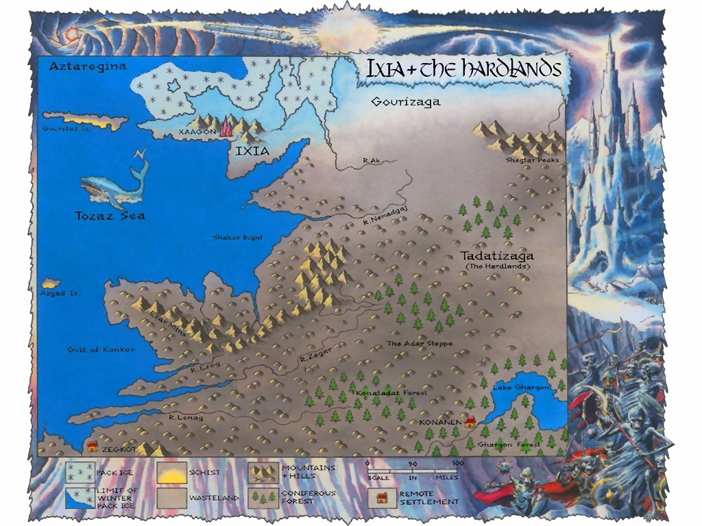

Ixia the Hardlands
{kind=link}

The frozen peninsula of Ixia juts westwards, barely linked to the mainland of Northern Magnamund. Its northern coastline is perpetually locked by pack ice, as is a small, unnamed island just off the north coast, approximately 100 miles northwest of the city of Xaagon. Only the westernmost tip of Ixia’s northern coastline is open to the freezing sea of Aztaregina. To the west of this point is the long, thin Gourstaz Island, almost 100 miles due west of Xaagon.
The city of Xaagon lies at the centre of the peninsula, close to the southern coastline and is surrounded by mountains. South of the Ixian peninsula is the Shakoz Bight, a tempestuous gulf of the Tozaz Sea devoid of islands, where the waves crash against the beaches of Tadatizaga—The Hardlands. The coastline sweeps in a jagged arc here before leading west for some leagues and eventually turning south and then southeast as the Gulf of Konkor eats away at the hilly wastelands. At the northern point between the gulf and the Tozaz Sea lies Azgad Island, about 250 miles southwest of Xaagon. Several lonely rivers flow into this gulf—the Ezog, the Zegar, and the Lenag—none of which flow past any Drakkarim settlements.
Several hundred miles inland to the east of the Gulf of Konkor, the hilly terrain gives way to the coniferous Konatadat Forest. Beyond this lies the deep, cold waters of Lake Ghargon, devoid of even the smallest islet. Hundreds of miles north of Lake Ghargon is the tundra of Gourizaga, the most northwesterly area of the Darklands, just to the east of the Ixian peninsula. The Shegtar Peaks lie here, alone in the freezing north, where no one dwells.